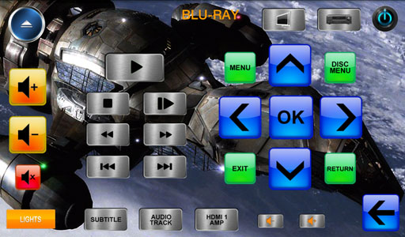
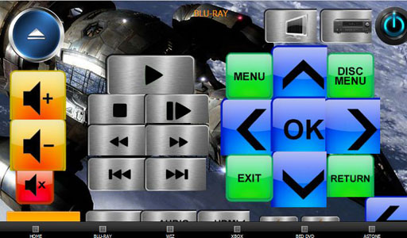

Hi
I'm no stranger to OpenRemote, and I have it running perfectly fine on an Ipad, 10" Motorola Xoom and iPhone.
However, I just bought two Tabtronics 7" Tablets to replace my Pronto's and am trying to run OpenRemote on them.
These tablets are 800*430 resolution. So I created a new Custom Panel with this resolution, and created some layouts.
However, I'm only getting about 1/4 of the layout on the screen on my tablets. When wondering if this was a resolution thing, I tried downloading my iPhone layout onto the tablet to see what would happen, and voila, it fits pretty much perfectly.
So in summary I have iPhone layouts at 320*480 that seem to fit perfectly on my Android 7" Tablets which are supposed to be 430*800.
Anyone got any ideas?
thanks
EDIT: In fact, I just tried to measure the resolution I am actually getting on this panel and it is about 535*330 - which explains why the iPhone layout almost fits in portrait. So the question is.... is OpenRemote not capable of scaling to 800*430, or have I been duped and actually my Tabtronics tablets are not 800*430 after all, but actually 535*330 - (surely not?)
{kind=link}
{kind=link}
{kind=link}
{kind=link}
{kind=link}
{kind=link}
|
Hmm haven't played with Androids for a long time so can only guess. I had similar size adjustment issues in early Samsung tablets that were struggling with understanding screen resolutions. Partly this was due to the fact that the Android app was set to auto-scale the screen to match physical screen size (which sort of works but does create a less crisp view because of the fuzzyness the scaling causes), and partly because the older Android versions didn't deal well with larger tablet size screen resolutions (everyone was assuming more or less phone-sized screens). I've not heard of Tabtronics tablets before. How old are the models you are using? Which version of Android are they running? For the auto-scaling, it has been turned off in the current downloadable binaries – if you are able to compile your own binary, you could try turning it on (one line change in XML) to see if that's what the hardware expects to reach the larger screen size, especially if the tablets are a bit older variety. |
|
Hi Juha. I confirm that I can compile.... can you tell me what change to make to enable scaling? thanks |
|
Hi Martyn, I also have scaling issues, using a Samsung Galaxy tab 7 inch. For me the background scales correctly (1024x600) but the images I use for buttons appear smaller on the tab than they do on the editor page  The top image shows what I get on my tablet, the bottom image shows how I have to position the buttons to get the end result on the tablet. |
|
Hi Graham. Hmmm... possibly same problem, but different symptom. I get everything scaled incorrectly (including background). It just so happens that I also have a layout designed for an iPhone at 320*480 and this is a set of screens that appear full-screen on the iPhone. Now when I run the same layout on my 7" Tablet (which is supposed to be resolution 480*800) the iPhone layout fits just about perfectly. So my problem is that my 7" tablet won't show 480*800 layouts because they're too big.... I have to create layouts much smaller (~320*480) and then they seem to be scaled up to fit the screen on the 7" tablet. I didn't find the scaling code yet, so if anyone can point me at it I can have a play.... thx |
|
I remember some issue when I first installed OR on my 7" tablet. The way I fixed it was to install an app called 'Spare Parts' and then turn off 'compatibilty mode'. Not sure if this is the same as your issue though. |
|
Hi Martyn, The screen behavior can be modified in AndroidManifest.xml where the last XML entry is:
<supports-screens
android:smallScreens="true"
android:normalScreens="true"
android:largeScreens="true"
android:xlargeScreens="true"
android:anyDensity="false" />
Changing the last entry on 'any density' to true will allow the Android platform to scale the bitmaps to match which ever screen size. This is not desirable for best looking graphics but it is possible that especially older devices that attempted to use Android on larger screens before they were well supported might require something like this (depending what assumptions were made by the vendor who customized Android for their device). The file can be found here: https://openremote.svn.sourceforge.net/svnroot/openremote/tags/project/Android_Console/Android_Console_2_0_0_Beta3/AndroidManifest.xml The Android documentation regarding different types of screen support elements can be found here: http://developer.android.com/guide/topics/manifest/supports-screens-element.html Let us know if any of that is of help. Best regards, – Juha |
|
Compatibility mode that impacts bitmap scaling sounds like something plausible. It may be due to Android attempting to scale bitmaps to larger screen size for apps that did not yet have the screen support definition in the Android manifest xml. |
|
I'm having resolution issues on my Nexus 7. Its resolution is 1280x800, but a custom panel of that size will only show a fraction on the device. The default 320x480 panels show fine though. Since this is my first experience with both OR and Android, I don't want to invest a ton of time making lower resolution panels if this is something that has a workaround or fix coming. |
|
Hi Nathan I don't pretend to understand what's going on here, but I definitely have an Android panel running perfectly at native resolution of 1280*800. It's my Motorola Xoom. I have a custom panel set up at this resolution and it works fine. My problem was (and still is) when I run a panel at the mid-range resolution of 800*430. I only get part of the layout on screen. My only option in this case is to "pretend" it's an iPhone resolution of 320*480 and then the layout fits full-screen, but the images are clearly up-scaled by something because the quality is pretty poor. there was a time (a long time ago) that I couldn't get my Xoom layouts right on 1280*800, but that was fixed with a Controller update to the latest version - but that was at least 9-months ago. So I suggest you check you have the latest controller version and I can't see why 1280*800 shouldn't work - it does for me Hope this helps. |
|
I do have controller 2.0.0, I decided to make a 1280x800 panel with a grid of 100x100 blocks to show exactly what it displays. Could this be some kind of ppi issue? Also my Nexus 7 is running 4.1.1 |
|
I used to see this issue on my old HTC running Gingerbread and to fix the problem I had to disable Compatibility Mode which could be worth trying. Download Spare Parts+ from Play and un-tick the Compatibility Mode checkbox. Rich |
|
Richard, |
|
Apologies for not reading the thread fully but at least the newer Spare Parts+ has caused some change. |
|
Ten brownie points to you Richard. You have fixed the original problem that I started this thread for. It was, as you suggested the compatibility mode, and I have now turned it off as per your suggestion using Spare Parts+. So I now have the full resolution of my tablet available to OR layouts. (However its not all good news as I now have to redraw and rescale all my layouts You're a star Richard, thanks a lot. |
|
Glad to hear it's fixed your issue Martyn and yes I don't envy you having to re-do the designer work...this can be a time consuming task! Rich |
|
Hi Nathan, I think the background issue is different to the button size issue. I tried setting different PPI settings for the button objects but that made no difference, they would always appear the same size. I used trial and error to work out what size to make my first button (in pixels - 143x143) then went from there. In the designer I had to size the orange box so that it cropped each button by about 20 - 25%, otherwise the trigger area on the remote would overlap onto the next button. |
|
I think I will have to do a lot of trial and error for now. I'll keep an eye out for updates and fixes down the road. |
|
After some messing around I figured I'd post what I found out and my solution to the problem. Button images are being shrunk approx. 25%. To be a bit more accurate, an image needs to be 1.33x the desired size. ONLY the image is being shrunk. Button area and text remain unaltered. Here is my 800x1280 panel with a 100x100 checkerboard on it. The buttons on the top row are 100x100, with the image reduced to 75x75, note how the button text is in its proper place. The lower button and image are 133x133 resulting in an image of 100x100, but keeping its original button area. Here is what the designer looks like for that panel. It's a little weird that a 100x100 button over a 100x100 section on the background shows a little bit of the right and bottom under it. I tried adjusting the relative position and ended up settling on TOP_LEFT giving the closest alignment. My solution for now is to work with images exclusively in another program, paint.net or Photoshop. I will create my layouts and button images using layers so I can move/edit/delete them as needed. Then I'll set them as backgrounds for panels and add button areas with transparent images wherever they're needed. For now this will be the easiest thing to do, and I like that I will have more control over how much of the panel I see compared to the online designer. Hopefully this information will help somebody down the road. Does anyone know of a good place to find images to use for buttons? |
|
Hi Nathan Good report, thanks - useful observations. Search for XOOM Template on global templates. They're all mine and you're welcome to whatever takes your fancy. |
|
I'm having the same problem on my Nexus 7 as described in this thread: (1) it runs in a lower resolution (presumably, it's "compatibility mode"), (2) I tried the tools mentioned, and I can't force compatibility mode off. Has this been solved properly yet? I have built my own Android apps before, so I am tempted to have a go and rebuilding the app against a newer version of the SDK to see whether a simple rebuild works, if not, then try to identify what code modifications are necessary, but I am not sure when I will get the time to do so. |
|
Hi Matthew, The problem does seem to have gotten worse on ICS but has always been an issue. The problem is to do with display densities, OpenRemote works in pixels but Android (and most UI frameworks) work in some independent unit in the case of Android it's the DIP. I am in the process of reworking the Android Console code base to fix this issue and so I can add you to the list of beta testers if you so wish. Rich |
|
I would definitely be interested in beta testing and even contribution to code. I just in the last hour rebuilt the android console (from SVN repository) with 4.2 SDK to see if that was a quick fix (low hanging fruit |
{kind=link}
{kind=link}
{kind=link}